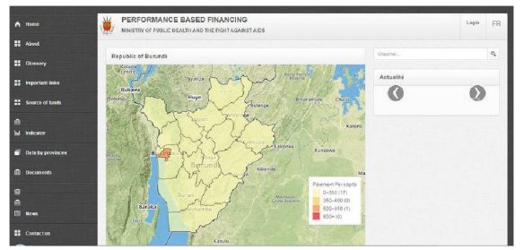

به عنوان بخشی از تلاشها برای بهبود پیامدهای سلامت و عملکرد سیستمهای سلامت، بوروندی یکی از اولین کشورهای آفریقایی بود که تامین مالی مبتنی بر نتایج (RBF) را در بخش بهداشت و درمان معرفی کرد. RBF ابزاری است که تامین مالی توسعه را با نتایج از پیش تعیینشده پیوند میدهد. پرداخت تنها زمانی انجام میشود که نتایج مورد توافق بهدستآمده باشند.
Open RBF، پلتفرمی برای باز کردن دادههای مربوط به اقدامات RBF است که در مرکز تلاشهای وزارت بهداشت بوروندی برای معرفی روش RBF و تقویت پاسخگویی در مراقبت بهداشتی قرار دارد. Open RBF برای اولین بار در سال ۲۰۱۴ معرفی شد. بازدههای اولیه مثبت بودند و Open RBF وارد مشارکت طولانیمدت با دولت شد. Open RBF همچنین برای برنامههای آموزش و آگاهی از AIDS در بوروندی به کار گرفته شدهاست.
پیشینه و زمینه
تمرکز بر مسئله / زمینه کشور
بوروندی، کشوری کمدرآمد با جمعیت ۱۰.۵ میلیون نفر است. این کشور یکی از فقیرترین کشورهای جهان است، با شاخصهای توسعه و اقتصادی که در میان ضعیفترین کشورها قرار دارند. بوروندی رتبه ۱۶۶ را از ۱۶۹ کشور در شاخص توسعه انسانی سازمان ملل متحد در سال ۲۰۱۰ دارد، و سرانه تولید ناخالص داخلی ملی در سال ۲۰۱۵ کمتر از ۲۱۰ دلار آمریکا بود. نتایج سلامت ضعیف هستند، و بار سنگین بیماری با بیماریهای عفونی و مسری، در درجه اول HIV / AIDS، مالاریا و اسهال مشخص میشود. امید به زندگی در سال ۲۰۱۶ تنها ۵۰ سال بود (هم برای مردان و هم برای زنان). هزینههای بهداشت و درمان ملی ۹ درصد از تولید ناخالص داخلی را تشکیل میدهند. علاوه بر هزینههای بهداشت عمومی پایین، سیستم بهداشت و درمان ملی بوروندی با چالشهای مهمی از جمله کمبود متخصصان بهداشت، کیفیت ضعیف خدمات بهداشتی، دسترسی ضعیف به داروهای ضروری در سراسر کشور، و سیستم اطلاعات بهداشتی ضعیف مواجه است.
تامین مالی مبتنی بر نتایج (RBF)
تامین مالی مبتنی بر نتایج (RBF) روشی است که تامین مالی توسعه را با نتایج از پیش تعیینشده پیوند میدهد. پرداخت تنها زمانی انجام میشود که نتایج مورد توافق بهدستآمده باشند، رویکردی که به دنبال تغییر تمرکز از ورودیها به نتایج است. با توجه به گزارشی که مزایای RBF را مشخص میکند: «تنها با ارزیابی نتایج زمانی که به دست آمدند، ما تا حدی از این خطر اجتناب میکنیم که کمک اهداکننده به طور موثر مورد استفاده قرار نگیرد.»
RBF در کشورهای در حال توسعه با همکاری بخش خصوصی، بخش دولتی و سازمانهای جامعه مدنی به کار میرود. از آن در بخشهای مختلفی از جمله مراقبتهای بهداشتی، آموزش، امنیت و انرژی استفاده میشود. RBF به عنوان یک مکانیزم مهم در تلاش برای مقیاسبندی ارائه خدمات مراقبتهای بهداشتی ضروری، از جمله مراقبتهای بهداشتی کودکان و مادران، برای مثال در کشورهایی مانند کامبوج و رواندا پدیدار میشود. OECD، RBF را به عنوان ابزاری کلیدی برای دستیابی به اهداف پوشش سلامت جهانی سازمان بهداشت جهانی در نظر گرفتهاست. مطالعات همچنین نشان میدهند که RBF عملکرد فراهمکنندگان خدمات درمانی را افزایش میدهد، با تفاوتهای مهمی که قبلا و بعد از معرفی RBF شناسایی شدهاند. RBF تاثیر زیادی بر توسعه سیستم سلامت در سطح عملیاتی در پروژههای RBF در برخی کشورها دارد.
بوروندی یکی از اولین کشورهای آفریقایی بود که تامین مالی مبتنی بر نتایج (RBF) را معرفی کرد. دوم در قاره آفریقا بعد از رواندا، آن شروع به اجرای RBF در سیستمهای مراقبت بهداشتی خود در سال ۲۰۱۰ کرد. در سال ۲۰۱۵، بوروندی شروع به استفاده از RBF در بخش آموزش و پرورش کرد.
فنآوری و تابع پایه شعاعی
کلید موفقیت برنامه RBF مدیریت موثر روزانه است و ابزارهای مدیریت اطلاعات برای این کار ضروری هستند. مقادیر زیادی داده باید وارد برنامههای RBF شوند، تایید شوند و اعتبارسنجی شوند تا این که داده باید براساس معیارهای از پیش تعیینشده پردازش شود تا پرداخت یارانه محاسبه و پراکنده شود. تکنولوژی نقش حیاتی در تضمین این که همه این کارها به طور موثر و دقیق انجام میشوند، ایفا میکند.
اگرچه بسیاری از برنامههای RBF از مایکروسافت اکسل برای این منظور استفاده میکنند، اما تعداد زیادی از آنها از Open RBF استفاده میکنند که یک ابزار مدیریت مالی قابل تنظیم است که به طور خاص برای پروژههای RBF طراحی شدهاست. از آنجا که این ابزار به راحتی داده را باز و قابل خواندن توسط ماشین میکند، مزیت دیگری نیز دارد که داده RBF را برای مصرف و تحلیل عمومی در دسترس قرار میدهد.
فعالان اصلی
عرضهکنندگان داده کلیدی
فراهمکنندگان داده کلیدی، فراهمکنندگان خدمات درمانی بوروندی هستند که در برنامههای RBF که از ابزار Open RBF استفاده میکنند، شرکت میکنند. این فراهمکنندگان خدمات، داده کمی و کیفی مربوط به خدمات ارائهشده را ایجاد میکنند و ابزار Open RBF آن داده و مراحل مختلفی که از آن عبور میکند را مدیریت و پردازش میکند. این مراحل شامل ثبت، تایید، پردازش، و محاسبه و پراکندگی پرداختها هستند. نتایج در حوزه عمومی نیز به اشتراک گذاشته میشوند.
کاربران و واسطههای داده کلیدی
چندین نهاد از داده استفاده میکنند. در درجه اول، مشارکت برنامههای RBF از آن برای تضمین ثبت دقیق و به موقع، تایید، پردازش و انتشار داده و همچنین پراکندگی پرداختها استفاده میکند. همچنین، سازمانهای مالی از این دادهها برای نظارت بر پیشرفت برنامه و تعیین اعتبارات استفاده میکنند. علاوه بر این، وزارت بهداشت بوروندی و سازمان مبارزه با AIDS از این دادهها برای هماهنگی تلاشهای بهبود بخش سلامت در سطح ملی استفاده میکنند. پزشکان و سیاستگذاران نیز از این دادهها استفاده میکنند. در نهایت، شهروندان به دادهها دسترسی دارند (اگرچه همانطور که در جای دیگری در این مطالعه موردی توضیح داده شد، جذب شهروندان تا حدودی محدود به نظر میرسد).
واسطههای اصلی داده وزارت بهداشت بوروندی و سازمان مبارزه با AIDS هستند که با هم تلاشهای بهبود سیستم بهداشت ملی بوروندی را هدایت میکنند. علاوه بر این، Cordaid، یک سازمان مبتنی بر دادههای هلند که برای ایجاد «فرصتهایی برای فقیرترین، آسیبپذیرترین و محرومترین مردم جهان» کار میکند، برنامههای RBF بخش سلامت و آموزش جامعه را با استفاده از ابزار Open RBF در بوروندی اجرا کردهاست.
ذینفعان کلیدی
نهادهایی که به طور مستقیم و غیرمستقیم با برنامههای RBF کار میکنند از کارکردهای فنآوری که Open RBF فراهم میکند بهره میبرند. همچنین، دولتها، سیاستگذاران، سازمانهای مالی، دانشجویان و شهروندان از داده در دسترس عموم و مقایسه داده سود میبرند. به طور گسترده، تمام شهروندان بوروندی از هرگونه بهبود بخش سلامت و آموزش سود میبرند که در نتیجه پلتفرم های Open RBF به دست آمدهاند.
شرح پروژه
آغاز
منشا Open RBF در بلژیک است، جایی که نیکولاس دو بورمن، بنیانگذار و مدیرعامل فعلی بلواسکوئر، شرکتی که برای بهرهبرداری از فنآوری برای منافع عمومی کار میکند، به دنبال راهی برای ترویج RBF در کشورهای در حال توسعه است. بورمن تقاضای زیاد برای ابزاری که به جمعآوری، تحلیل و انتشار داده RBF کمک میکند را به درستی شناسایی کرد. در نتیجه، بورمن و یک تیم متشکل از پنج شریک چنین ابزاری را ایجاد کردند و آن را Open RBF نامیدند. این ابزار در سراسر جهان توسط "BlueSquare " به کار گرفته و اجرا میشود.
پروژههای آزمایشی RBF در سال ۲۰۰۶ در بوروندی در شش استان آغاز شدند و این بخشهای کل کشور را تا سال ۲۰۱۰ پوشش میدهند. پلتفرم Open RBF برای اولین بار در سال ۲۰۱۰ در بوروندی در پاسخ به درخواست دولت بوروندی و همزمان با پذیرش تامین مالی مبتنی بر نتایج در سطح ملی ارائه شد. وزارت بهداشت بوروندی به دنبال راههایی برای بهبود عملکرد مراقبتهای بهداشتی در سطح ملی و تقویت مکانیزمهای پاسخگویی بود. بازدههای اولیه مثبت بودند و Open RBF وارد مشارکت طولانیمدت با دولت شد. Open RBF برای بخشهای سلامت و آموزش در بوروندی نیز به کار رفتهاست.
Open RBF در بوروندی شبیه به Open RBF در سراسر جهان عمل میکند. اهداف گسترده آن بهبود باز بودن داده برای فراهم کردن دسترسی آن توسط طیفی از ذینفعان در مراقبت بهداشتی و در نتیجه ترویج اهداف کلی RBF برای کارآمدی، شفافیت، پاسخگویی و حاکمیت خوب است. این پلتفرم به عنوان یک راهحل منبع باز مبتنی بر وب و با استفاده از ترکیبی از فنآوریها، از جمله Php , Mysql , Jquery، خودراهانداز، Highcharts و Dompdf ساخته شدهاست. این ابزار همچنین با نقشه گوگل ادغام میشود.
برای دسترسی به ابزار Open RBF، کاربران از پرتال بازدید میکنند که هم یک رابط خصوصی و هم عمومی دارد. حوزه خصوصی شامل داشبوردهایی است که دادههای پروژه را از زمینه نمایش میدهند - دادههایی که توسط طرفین مختلف ثبت و تایید شدهاند، و تنها پس از آن در پلتفرم منتشر میشوند. دادهها در این حوزه شامل اطلاعات مربوط به پیشرفت پروژه، از جمله شاخصهای کیفیت، کمیت و عملکرد است.
رابط عمومی، رابط جلو - انتها (تصویر زیر نشانداده شدهاست) شامل دادههای کمی بیشتری نسبت به رابط خصوصی است. منطقه عمومی به کاربران امکان می دهد اطلاعات را در سطح استان یا ملی مشاهده کنند، به عنوان مثال، اطلاعات مربوط به نرخ واکسیناسیون، سلامت باروری، سلامت پیشگیرانه و HIV/AIDS. در تصویر ارائهشده در اینجا، رابط کاربری نشان میدهد که ۱۰۰ درصد از کودکان مراجعهکننده به کلینیکهای شرکتکننده در مارس ۲۰۱۵ کاملا واکسینه شدهاند، در حالی که ۸۰.۳۶ درصد از کودکان در نوامبر همان سال کاملا واکسینه شدهاند. این گزارش همچنین نشان میدهد که در سپتامبر ۲۰۱۵، تقریبا ۵۰ درصد از بیماران برای سل تحت غربالگری قرار گرفتند. هر شاخص کلیدی با ارقام منطقهای و جهانی مقایسه میشود.
تمام اطلاعات موجود در پورتال (به خصوص حوزه خصوصی) برای تعیین پیشرفت پروژهها و اینکه آیا آنها واجد شرایط دریافت یارانه مبتنی بر عملکرد هستند یا خیر، مورد استفاده قرار میگیرند. هنگامی که یارانهها محاسبه و پرداخت میشوند، این اطلاعات در رابط عمومی نمایش داده میشوند، که شامل شاخصهای عملکرد فراهمکننده است که به شهروندان و سیاستگذاران (و هر کس دیگری که علاقهمند است) اجازه میدهد تا پیشرفت پروژهها یا گروههای خاص را اندازهگیری کنند و ببینند که بودجه عمومی چگونه تخصیص داده میشود. یکی از اهداف رابط عمومی باز کردن داده برای تشویق مالکیت و مشارکت بیشتر مدنی است.

تصویر از http://www.fbpsanteburundi.bi/ که داده های سلامت بوروندی را همانطور که توسط Open RBF ایجاد شده است نمایش می دهد.
تقاضا و استفاده از داده
همانطور که در بالا ذکر شد، تقاضا برای Open RBF عمدتا از برنامههای RBF نشات میگیرد. چنین برنامههایی میتوانند توسط سازمانهای غیرانتفاعی، گروههای جامعه مدنی یا بخشهای دولتی مدیریت شوند. در بوروندی، تقاضای بیشتری از سوی وزارت بهداشت بوروندی و سازمان مبارزه با AIDS وجود دارد. همه این سازمانها از دادههای موجود در این درگاه نه تنها برای پیگیری پیشرفت پروژههای خود، بلکه برای پروژههای دیگر در سراسر کشور استفاده میکنند. نقشآفرینان جامعه مدنی و روزنامهنگاران نیز از داده Open RBF برای اطلاعرسانی به کارشان استفاده میکنند، اما هیچ یک از این گروهها مخاطبان هدف اصلی این پلتفرم نیستند.
تاثیر
اندازهگیری تاثیر پروژههای داده باز هرگز آسان نیست، به خصوص که برخی از پروژهها ممکن است تاثیرات غیر مستقیمی داشته باشند که ثبت آنها سختتر است. با این حال، طیفی از شاخصها نشان میدهند که Open RBF نه تنها تاثیر مثبتی بر بوروندی داشتهاست، بلکه درسهای مهمی را برای نقش بالقوه متحولکننده داده در بهبود خدمات درمانی و حل مشکلات عمومی پیچیده در جهان در حال توسعه ارائه میکند.
بهبود سلامت
در کل، همانطور که اشاره شد، وضعیت بهداشت و درمان در بوروندی همچنان ضعیف است. اما نشانههای دلگرمکنندهای از بهبود در برنامههای RBF وجود دارد که تاثیر مثبت Open RBF را نشان میدهد. یک مثال را میتوان در کار کوردیاد با کارکنان بهداشت جامعه در استان ماکامبا یافت که منجر به کاهش قابلتوجه موارد مالاریا شدید شدهاست. به علاوه، کار کوردیاد در ۸۱ پیشدبستانی بوروندی، که شامل ۲۷ سازمان محلی تاییدکننده شاخصهای آموزش جامعه و شبکهای از ۱۲ هیات نظارتی است، با بهبود دسترسی آموزشی برای دانشآموزان تمام سنین، تعادل جنسیتی بهتر در برنامهها، روشهای تدریس بهتر، و بهبود نمرات عملکرد تحصیلی در میان دانشآموزان همبستگی دارد.
البته این بهبودها نتیجه عوامل بسیاری هستند، اما افرادی که با نتایج آشنا هستند به نقش مهم Open RBF اشاره میکنند. برای مثال، دکتر اتین نکشیمانا، RBF و کارشناس تقویت سیستم سلامت در بوروندی که در حال حاضر یک پروژه RBF جامعه کوردیاد را هماهنگ میکند، میگوید: «من نمیتوانم به طور علمی بگویم که Open RBF به نتایج مثبتی منجر شدهاست که ما در برنامههای RBF میبینیم. با این حال، میتوانم بگویم که بدون Open RBF، ما به این نتایج مثبت دست نمییافتیم.»
مدیریت بهتر پروژه و صرفهجویی در هزینهها
مزیت قابلتوجه Open RBF نقش آن در بهبود مدیریت پروژه است، که به نوبه خود خدماتی که از آن استفاده میکنند را افزایش داده و کارآمدی هزینه بیشتری را ایجاد میکند. Open RBF با اجازه دادن به ذینفعان برای پیروی منظم و دقیق از نتایج پروژه در زمان واقعی مجازی، از جمله از طریق تجسمهای پیچیده، به مدیریت پروژه بهتری دست مییابد. چنین نظارتی نه تنها نتایج پروژهها را بهبود میبخشد، بلکه منجر به صرفهجوییهای مالی نیز میشود که به سازمانها کمک میکند منابع کمیاب توسعه را به طور موثرتری مدیریت کنند. همانطور که وینسنت کامنیرو، مدیر داده و درگاه در کوردیاد میگوید: «درگاه Open RBF اجازه شفافیت بیشتر در مدیریت مالی، کاهش هزینه عملکرد سازمانی را دادهاست و یک محافظ زمان قابلتوجه برای شکافهای تحقیقاتی ما است.» مدیریت پروژه دقیق به ویژه در مراحل اولیه یا آزمایشی یک برنامه مهم است، زمانی که اهداکنندگان ممکن است نظارت کنند تا اثربخشی یک روش را تعیین کنند و اینکه آیا منابع مالی را افزایش دهند یا خیر.
Open RBF همچنین به سازمانهای کمکرسانی و دولتها کمک میکند تا پروژهها را از راه دور نظارت کنند، عاملی که کمک بزرگی به گروههای سرمایهگذاری خارجی است. مزایای مدیریت پروژه از راه دور در طول تحولات سیاسی اخیر در بوروندی آشکار شد، زمانی که آژانسهای خارجی با نظارت بر پروژههای خود از امنیت نسبی کشورهای میزبان خود راحتتر بودند. به طور مشابه، کار کوردیاد با کارکنان بهداشت جامعه در استان دورافتاده ماکامبا، به طور قابلتوجهی با توانایی آن در پیگیری پروژهها از بوجومبورا، پایتخت ملی، تسهیل شدهاست. به عنوان مثال، اگر مشکلی با روشهای جمعآوری داده کارکنان بهداشت و درمان وجود داشته باشد، کارشناسان برنامه میتوانند به سرعت آن را شناسایی کنند و برای حل مسئله روی داشبوردهای خود در پایتخت تلاش کنند.
ارزش ذاتی دادهها
Open RBF بوروندی مثال خوبی از نقش قدرتمندی است که داده میتواند در حل مشکلات عمومی در جهان در حال توسعه ایفا کند. به طور فزایندهای، مشخص میشود که داده ایجاد شده توسط برنامههای خاص RBF را می توان در موقعیتهای دیگر نیز به کار برد؛ این دادهها دارای ارزش ذاتی هستند. برای مثال، وزارت بهداشت در تلاشهای فعلی خود برای گسترش تلاشهای سلامت جامعه (معروف به برنامه Kira)، از داده Open RBF موجود در دسترس عموم که توسط برنامههای قبلی ایجاد شدهاست، استفاده میکند. این دادهها شامل شاخصهای مختلف هزینهیابی کمی و کیفی، و همچنین اطلاعات مربوط به تعداد بیماران و میزان واکسن است که برای ارزیابی مداخلات قبلی مورد استفاده قرار گرفتهاند. به این ترتیب، داده Open RBF در دسترس عموم میتواند به عنوان یک نقطه مرجع مهم و راهنما برای توسعه برنامههای آینده عمل کند.
بسیاری از سازمانهای اهداکننده و گروههای دانشجویی نیز به داده Open RBF که در دسترس عموم است، تکیه میکنند. برای مثال، بانک جهانی که به تامین مالی پروژه کایرا که در بالا به آن اشاره شد کمک خواهد کرد، بر داده بخش مراقبت بهداشتی Open RBF قبلی تکیه کردهاست تا بستههای تامین مالی خود را تعیین کند. به همین ترتیب، دانشجویانی که درباره سلامت بوروندی یا سایر بخشها تحقیق میکنند، به صفحات عمومی Open RBF برای تحقیق خود دسترسی دارند.
توانمندسازی شهروندان
همانطور که مثال دانشجویان نشان میدهد، داده Open RBF میتواند نقش قدرتمندی فراتر از جامعه توسعه ایفا کند و شهروندان را با اطلاعات و بینشها توانمند سازد. ابزار Open RBF در بوروندی اولین فرصت را برای عموم فراهم کرد تا پروژههای خدمات درمانی در سراسر کشور را بازبینی کرده و درباره آنها نظر بدهند. شهروندان از طریق گروههای اجتماعی و سایر کانالهای حمایتی میتوانند به برنامهریزی بهداشت و درمان، تایید عملکرد، پیگیری مخارج دولت و تضمین پاسخگویی بیشتر کمک کنند.
دکتر رز کاماریزا، مسئول برنامه کوردیاد، بوروندی، گفت: «این کار جوامع را در روند اجرا قرار میدهد.»
ریسکها
هدف از طرح Open RBF بوروندی، دسترسی به اطلاعات قابلشناسایی شخصی برای عموم مردم نیست. با این حال، برخی از سطوح ریسک حریم خصوصی زمانی باقی میمانند که پروژههای داده باز در بخشهایی مانند مراقبت بهداشتی فعال باشند. تا به امروز هیچ مدرکی دال بر این که Open RBF مسائل حریم خصوصی را مطرح کردهاست، وجود نداشته است، اما مهم است که هنگام کاهش اطلاعات شخصی از انتشار داده یا ناشناس کردن مجموعه داده مراقب باشید.
درسهای آموخته شده
چندین درس مهم با قابلیت کاربرد گسترده از این مطالعه موردی خاص حاصل میشود. این موارد را می توان با در نظر گرفتن توانمندسازهای اصلی پروژه، و همچنین مهمترین موانع یا چالشهای موفقیت آن دستهبندی کرد.
توانمندسازها
حمایت دولت
وزارت بهداشت عمومی بوروندی و سازمان مبارزه با ایدز توانمندسازهای مهمی در موفقیت Open RBF بودند. آنها RBF را با استفاده از ابزار Open RBF در ارائه این برنامه، وارد برنامه سلامت ملی دولت کردند. تاثیر نهایی و موفقیت این ابزار، تا حد زیادی، از حمایت دریافتشده توسط دولت ملی سرچشمه گرفتهاست، که به تامین مالی اجرای آن کمک کرد، آن را با طیف وسیعی از گروههای بخش سلامت سازگار کرد، و به طور کلی آن را در سراسر کشور گسترش داد. در این رابطه، Open RBF در بوروندی مثال خوبی است از این که حمایت سازمانی قوی و خرید سیاسی و اجرایی برای موفقیت پروژههای داده باز مفید هستند. بسیاری از پروژههای مورد بحث در این سری فاقد چنین حمایتی هستند.
لازم به ذکر است که جو سیاسی فعلی در بوروندی ممکن است در ماهها و سالهای پیش رو یک چالش باشد. اگرچه این پروژه هم برای کشور مفید و هم مفید است، اما احتمال درگیریهای سیاسی بیشتر ممکن است توانایی نظارت بر کارایی برنامهها در بخش بهداشت و درمان را محدود کند.
موانع
ویژگی منطقهای و بخشی
استفاده از Open RBF در کشورهای مختلف گواهی بر پتانسیل فرامرزی فنآوری است. با این حال، درست است که نسخه اول نرمافزار Open RBF مورد استفاده در بوروندی کاملا با شرایط محلی و نیازهای مختلف برنامههای مختلف RBF سازگار نبود. همه این برنامهها یکسان نیستند. هر کدام مجموعه متفاوتی از معیارهای از پیش تعیینشده دارند. برخی ممکن است از یک اهداکننده پول دریافت کنند در حالی که برخی دیگر از چندین اهداکننده پول دریافت میکنند. این نسخه اول پلتفرم اصلاح شد و نسخه دوم در سال ۲۰۱۴ رونمایی شد. این نسخه دوم امکان تامین مالی چندمدیریتی، شامل مصورسازی دادههای جدید، و همچنین شامل یک سیستم هشدار را فراهم میکند تا به حسابرسان اجازه به روز رسانی دادهها را بدهد.
سازمانهای بینالمللی توسعه
سازمانهای توسعه بینالمللی نیز نقش کلیدی را در موفقیت Open RBF ایفا کردند. کوردیاد، که این ابزار را برای برنامههای بخش سلامت، آموزش و امنیت جامعه خود به کار گرفت، یکی از مهمترین حامیان بود. بانک جهانی نیز به خصوص با استفاده و اعتبارسنجی سودمندی داده Open RBF که در دسترس عموم است، کمک کردهاست.
تخصص فنی
براساس گزارش اتحادیه بینالمللی مخابرات (ITU)، درصد شهروندان بوروندی که از اینترنت استفاده میکنند از سال ۲۰۱۴ تا ۲۰۱۵ بیش از سه برابر شدهاست. با این حال، کمتر از ۵ درصد مردم بوروندی به طور منظم از اینترنت استفاده میکنند - نرخ پایینی حتی با استانداردهای معمول اقتصادهای کمتر توسعهیافته. تا حدی، پیامدهای منفی را می توان با استفاده از واسطههایی که اطلاعات را با شهروندانی که به هم متصل نیستند، به اشتراک میگذارند، کاهش داد. اما در کل، وضعیت ضعیف آمادگی اینترنت در کشور، توانایی شهروندان و کاربران برای دسترسی به داده ایجاد شده توسط Open RBF را محدود میکند.
حتی در میان کسانی که به اینترنت متصل هستند و از نظر فنی ماهر هستند، فقدان دانش و تخصص داده اغلب پتانسیل پروژههای Open RBF را محدود میکند. تیمهای Open RBF متوجه میشوند که بسیاری از آماردانان که با آنها کار میکنند، برای کار با داده به شیوهای که Open RBF به آن نیاز دارد، آموزش ندیدهاند. این امر ماموریتهای آموزشی را پیچیده و کند میکند. برای مثال، آماردانان در سطح استان در برخی از کشورها همیشه با مدیریت داده فراتر از استفاده از مایکروسافت اکسل آشنا نیستند.
انعطافپذیری طراحی
ساختن نرمافزار قابل اعتماد و واقعا مفید مستلزم تطبیق آن با شرایط و نیازهای محلی است. نرمافزار اغلب از بالا به پایین طراحی میشود، اما به منظور مفید بودن در زمینههای مختلف، باید با اطلاعات جدید از زمینه و کاربران سازگار شود. طراحی نرمافزار یک فرآیند تکراری است. ثابت شدهاست که این یک چالش نه تنها در بوروندی است، که در آن، همانطور که در بالا ذکر شد، کاربران برای انطباق نرمافزار با شرایط محلی تلاش میکنند، بلکه تقریبا در هر جایی که Open RBF اجرا شدهاست. برای مثال، مدیران برنامه، آنتونی لگراند و النا ایگناتوا تخمین میزنند که ۸۰ درصد از مشتریان Open RBF برای درخواست تغییر به تیم بلواسکوئر باز میگردند و در نتیجه برنامه RBF خود به مرور زمان تغییر میکند. فعالسازی این سطح از انعطافپذیری براساس طراحی اولیه Open RBF به ارائه چالشها ادامه میدهد اما برای موفقیت پروژههای داده باز و مداخلات فنی به ویژه در کشورهای در حال توسعه ضروری است.
تکرارپذیری
Open RBF بارها و بارها در داخل و خارج از بخش خدمات درمانی تکرار شدهاست - که ارزش مدل و ابزار آن برای بسیاری از ذینفعان را نشان میدهد. از زمان آغاز آن در بخشهای سلامت و آموزش در بوروندی، Open RBF در بخش امنیت نیز مورد استفاده قرار گرفتهاست. و البته، انتشار Open RBF فراتر از بوروندی نیز گسترشیافته است. در حال حاضر در مجموع ۱۵ کشور از Open RBF برای تسهیل مدیریت برنامه RBF استفاده میکنند، از جمله بنین، کامرون، کنگو، هائیتی، قرقیزستان، لائوس و نیجریه. موارد جمهوری دموکراتیک کنگو و نیجریه به دلیل بزرگی بسیار جالب توجه هستند: ۱۰۰۰ تسهیلات در برنامه نیجریه و ۲۰۰۰ در DRC گنجانده شده است. در حالی که تلاشهای RBF باز نیاز به سطحی از سفارشیسازی برای زمینههای خاص دارد، پلتفرم و رویکرد کلی که در بوروندی به کار گرفته شده است به اندازه کافی انعطافپذیر برای مقیاسبندی جغرافیایی و در بین بخشها ثابت شده است.
نگاهی به آینده
سازماندهندگان Open RBF بر روی چندین طرح برای بهبود نرمافزار و برنامههای خود در سراسر نواحی اجرایی کار میکنند.
بهروزرسانیهای پلتفرم موبایل
گسترش کارکردها و بهبود پاسخگویی عناصر متحرک Open RBF حوزههای تمرکز روشنی هستند که پیش میروند. برای اجرای Open RBF در بخش خدمات درمانی، مانند بوروندی، بلواسکوئر در حال تست یک مکانیزم بازخورد بیمار جدید برای جمعآوری مستقیم اطلاعات از کسانی است که خدمات درمانی دریافت میکنند. علاوه بر این، ابزار جمعآوری داده موبایل در جولای ۲۰۱۵ معرفی شد تا اجازه دهد داده بر روی پلتفرم Open RBF آپلود شود. این ابزار که به طور خاص توسط بلواسکوئر برای تلاشهای RBF برای بهبود سیستم آموزشی بوروندی توسعهیافته است، برای بهبود جمعآوری و تایید داده طراحی شدهاست. این شامل یک رابط ساده است و امکان ذخیرهسازی دادهها را تا زمانی که ابزار به اینترنت متصل شود فراهم میکند و دادهها میتوانند در سیستم آپلود شوند. این ابزار در زمان برای دالهای داده صرفهجویی میکند و کیفیت دادههای جمعآوریشده را افزایش میدهد. هم تلفنهای همراه و هم تبلتها در حال آزمایش هستند و الزامات هزینه را در ذهن دارند.
یک پلتفرم کاربرپسند با ثباتتر
Open RBF تلاش میکند تا مسائل اتصال را با ایجاد قابلیت همکاری بین سیستمهای اطلاعاتی حل کند. هدف در اینجا ارتباط بهتر تحلیل داده جمعآوریشده و معتبر است که به نوبه خود خواندن بهتر و کاملتر عملکرد هر رویکرد RBF را ممکن میسازد. تیم برای بهبود لایههای قابلیت همکاری بین ابزارهای پشتیبانی با استفاده از سیستمهای DHIS۲ و یکپارچهسازی آنها با Open RBF کار میکنند.
Open RBF همچنین گامهایی را برای بهبود تصویرسازی داده بر روی داشبوردها برداشته است. هدف آنها بهبود روشی است که نتایج نمایش داده میشوند تا پلتفرم را کاربرپسند تر کنند، به خصوص در یک نگاه.
ادغامها و افزایهها
در نهایت، مرحله بعدی Open RBF دارای تعدادی افزایه و ادغام جدید خواهد بود تا قابلیتهای جدیدی را به پلتفرم بیاورد و آن را بهتر به دیگر کاربران پلتفرم متصل کند. احتمالا مهمترین ادغام جدید بهبود قابلیتهای موقعیت جغرافیایی و ویژگیهای نقشهبرداری خواهد بود. سازمان دهندگان همچنین ادغام رسانههای اجتماعی بیشتری را پیش میبرند، با عملکردهای فیس بوک و توییتر که اولویتهای اول را نشان میدهند. فراتر از ادغامهای خاص تحت توسعه، تمرکز ادغام و اتصال نشاندادهشده توسط Open RBF روشن میسازد که بخش کلیدی طرح تکامل پلتفرم در طول زمان شامل یافتن راههایی برای آوردن ویژگیهای پلتفرم موجود به کاربران Open RBF است.
نتیجهگیری
رویکرد تامین مالی مبتنی بر نتایج، به ویژه در کشورهای در حال توسعه، در حال رشد است. گسترش سریع و مقیاسبندی پلتفرم Open RBF نشان میدهد که پروژههای دادهباز چقدر سریع میتوانند در مناطق و بخشها تکرار شوند وقتی که یک گزاره ارزش مشخص را می توان بیان کرد و تاثیرات مثبت اولیه را میتوان نشان داد. شاید حتی مهمتر از آن، پلتفرم Open RBF به دولتها کمک میکند تا تلاشهای RBF داده - محور را به سرعت گسترش دهند، و ویژگیهای کلیدی و کارکردهای آماده برای اجرای آن زمانی که یک حوزه مشکل مشخص شد و اراده سیاسی و خرید و فروش به وجود آمد را بارز میکند.